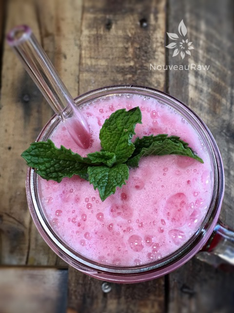

Feel the Beet
~ alkaline, raw, vegan, nut-free ~
I have been working on creating a few more alkaline drinks to add to my morning routine. This particular one always starts my day off with a smile. I mean, really… a vibrant red juice with pink foam ( from the apple cider vinegar ) is the new rage in my kitchen.
The three key ingredients are beet juice, apple cider vinegar, and fresh ginger. A powerful trio to wake up the digestion and to help get things moving.
There is something beautiful about beets. Not only on the outside but also the inside. They contain choline, which helps detoxify and cleanse both the liver and the entire system. Supporting your liver is essential for ridding your body of toxins on a daily basis.
I shared in my Apple Cider Vinegar and Honey Drink recipe how the alkalinity of apple cider vinegar can help correct excess acidity in our system and help prevent and fight infection by promoting a more balanced PH in the body.
Studies have shown that diseases flourish in acidic conditions. Returning the body to a more alkaline state may help to combat a host of conditions such as bladder infections, aching muscles and joints, fatigue, allergies, and sluggish or poor digestion.
And then there is the fresh ginger. Let’s turn the heat up with this baby. Ginger is right up there, being one of the most alkaline-promoting foods. It has a pH of 5.6 to 5.9, but of course, we also need to take into account the quality of the foods that we are ingesting. The alkalinity of foods depends on growing conditions and processing. So choose wisely.
Now, you may not require any sweetening… so go ahead and give it a swig before adding any. But I did… but to keep this drink sugar free (except for the natural sugars found in the beets), I used my all-time favorite liquid NuNaturals (alcohol free) stevia. If you want to add in a sweetener and keep it more alkaline, use raw honey. Start with a few tablespoons and work up until you please those taste buds sitting on the tip of your tongue.
This recipe should last for a few days in the fridge, but remember when juicing, it’s always best to drink it sooner than later.
Please comment below, and I hope you enjoy this recipe. Sipping blessings, amie sue

Ingredients:
- 5 cups water
- 1/2 cup raw apple cider vinegar
- 1/3 cup fresh beet juice
- 1/2″ fresh ginger
- 2 squirts Liquid NuNatural stevia
Preparation:
- In the blender, combine the water, apple cider vinegar, beet juice, ginger, and stevia. Blend on low unless you want a lot of foam. Foam is good, just hard to bottle if that is your intention.
- Serve right away or store in airtight bottles in the fridge for several days.
- It is best to drink it sooner than later since the fresh beet juice as it sits, it will start to lose nutrients.
- Tastes incredible over ice with some bruised mint leaves added.
- I bottled some up in (these) bottles, which can be purchased through my Amazon store. I Love them; I ordered two more cases for my kombucha drinks too.
© AmieSue.com